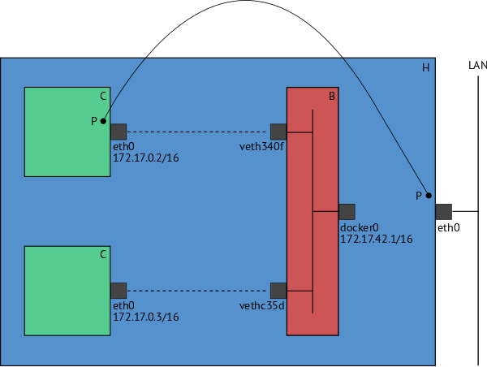
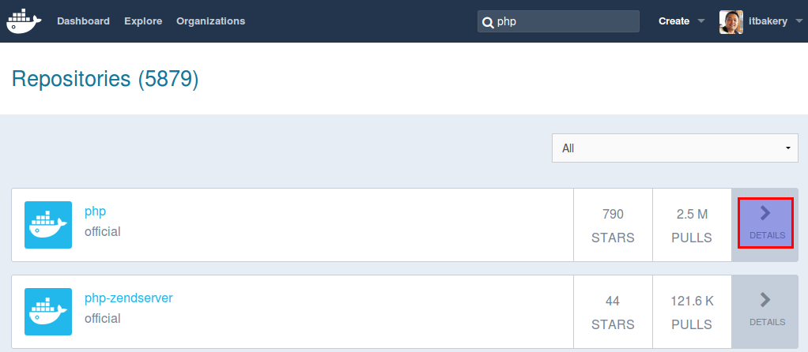
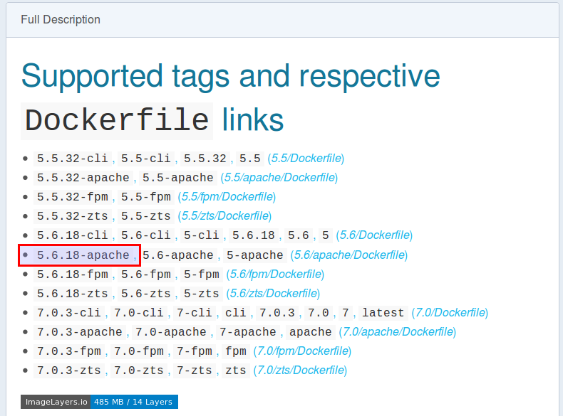
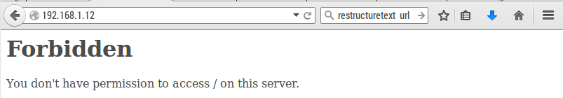
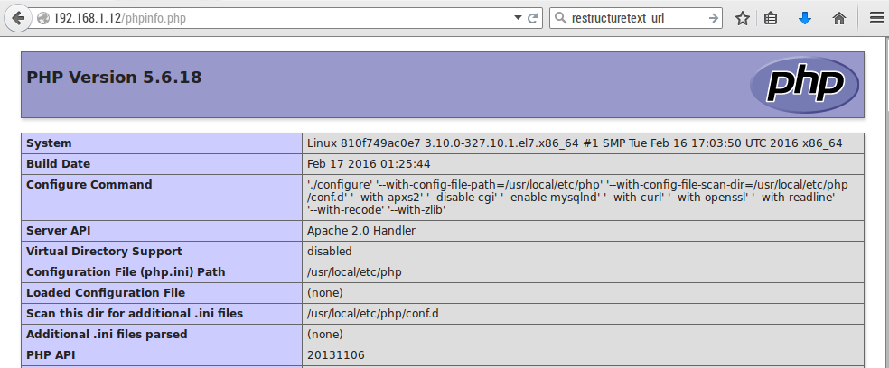
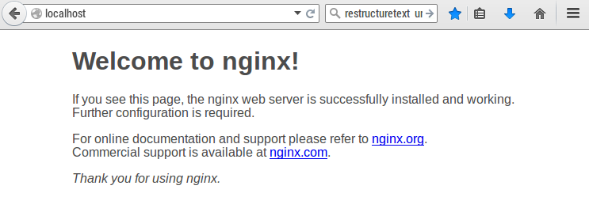
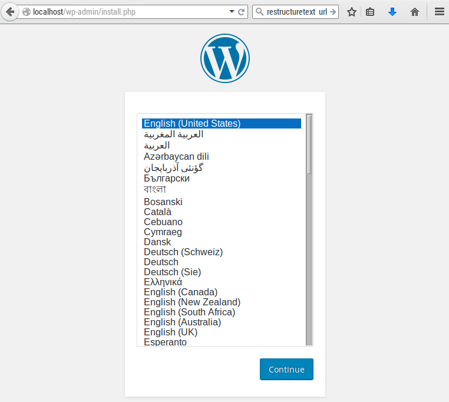

บทที่ 2 Docker Container¶
Docker container เป็นเทคโนโลยี ที่อยู่พื้นฐานของ Linux Container มีวัตถุประสงค์ที่ต้องการสร้าง สถาพแวดล้อมให้แก่ app หลายๆ app (Apache, PHP, MySQL, Wordpress..) ออกจากกัน การแยกออกจากกันนี้ (Isolation) โดยจะอาศัย ความสามารถของ Linux kernel ที่เรียกว่า namespace ความสามารถในการทำ isolation นี้ที่ผ่านมาเราใช้ความสามารถของการสร้าง virtual machine แต่มีข้อเสียดังนี้
- ใช้เวลาในการ Boot time นาน เนื่องจากจะต้องเริ่มต้นการทำงานจาก การ boot guest os
- เสีย Overhead เพื่อใช้ในสร้าง guest os
- มีขนาด image ใหญ่
แต่ตรงกันข้ามกับ Docker ที่ใช้ความสามารถของ Container จะมีขนาดเล็กและเร็วกว่า

ติดตั้ง Docker¶
- เพิ่มเติม Docker repo
1 2 3 4 5 6 7 8 | $ sudo tee /etc/yum.repos.d/docker.repo <<-'EOF'
[dockerrepo]
name=Docker Repository
baseurl=https://yum.dockerproject.org/repo/main/centos/$releasever/
enabled=1
gpgcheck=1
gpgkey=https://yum.dockerproject.org/gpg
EOF
|
- ติดตั้ง package
1 | sudo yum install docker-engine
|
- Start Service
1 | sudo systemctl restart docker
|
เมื่อสั่งให้มีการ run docker จะทำให้มี network สำหรับ container มาเช่นเดียวกัน
1 2 3 4 5 6 7 8 | ip a show docker0
6: docker0: <NO-CARRIER,BROADCAST,MULTICAST,UP> mtu 1500 qdisc noqueue state DOWN
link/ether 02:42:77:81:76:7e brd ff:ff:ff:ff:ff:ff
inet 172.17.0.1/16 scope global docker0
valid_lft forever preferred_lft forever
inet6 fe80::42:77ff:fe81:767e/64 scope link
valid_lft forever preferred_lft forever
|
ดังรูป
- ตรวจสอบความถูกต้องของการติดตั้ง ด้วยคำสั่ง Docker run และ image ชื่อ hello-world
1 2 3 4 5 6 7 8 | sudo docker run hello-world
Unable to find image 'hello-world:latest' locally
latest: Pulling from library/hello-world
03f4658f8b78: Pull complete
a3ed95caeb02: Pull complete
Digest: sha256:8be990ef2aeb16dbcb9271ddfe2610fa6658d13f6dfb8bc72074cc1ca36966a7
Status: Downloaded newer image for hello-world:latest
|
คำสั่ง docker run ตรวจสอบในระบบพบว่ายังไม่ image ที่ชื่อว่า hello-world จึงทำการ download ลงมา กระบวนการ Download และนำมาติดตั้งนี้เรียกว่า pull
1 2 3 4 5 6 7 8 9 | $ sudo docker ps
$ sudo docker ps -a
CONTAINER ID IMAGE COMMAND CREATED STATUS PORTS NAMES
30a5e2b50140 hello-world "/hello" 2 minutes ago Exited (0) 2 minutes ago stoic_raman
$ sudo docker images
REPOSITORY TAG IMAGE ID CREATED SIZE
hello-world latest 690ed74de00f 4 months ago 960 B
|
คำสั่ง docker ps -a เพื่อตรวจสอบดูว่ามี Container อยู่ในระบบ ทั้งมีสถานะที่ทำงานอยู่หรือในสถานะที่ยุติการทำงานแล้ว
ความสัมพันธ์ระหว่าง Container และ Image
Image คือ snapshot ของ filesystem ที่จัดเก็บไว้ ประกอบด้วยชั้นของ file หลายๆชั้น มีสถานะของ file system
เป็น Readonly แต่ละ image จะมีค่าประจำตัวเรียกว่า IMAGE ID มีความยาว 12 ตัวอักษร เราสามารถที่จะดึง หรือ
pull image ได้โดยตรงจาก Docker Registry ด้วยคำสั่ง docker pull หรือสามารถสร้าง image ของเราเอง
ได้โดยการใข้คำสั่ง docker build -t เราสามารถ ลบ image ได้ด้วยคำสั่ง docker rmi [image id]
Container คือสิ่งที่สร้างขึ้นมาจาก คำสั่ง docker run จาก image หากจะเปรียบเทียบกับการเขียนโปรแกรม
image จะเปรียบเสมือน class ส่วน Container ก็จะเปรียบเหมือนกับ instance ของ class สามารถใช้คำสั่ง docker ps
เพื่อดู process ของ container ที่ ทำงานอยู่ และ docker ps -a เพื่อดู process ทั้งหมดรวมถึง container ที่
หยุดการทำงานแล้ว เราสามารถลบ container ที่ไมใช้งานด้วย docker rm [container id]


โหลด Docker มาจาก Docker image
ตัวอย่างต่อไปนี้จะเป็นการสร้าง container จาก image php ที่มี tag 5.6 รวมกับ apache โดยให้เข้าไปที่ Docker hub
กดเลือก detail ของ php
ค้นหาผ่านทาง commandline
1 2 3 4 5 6 7 | $ sudo docker search php
[sudo] password for admin:
NAME DESCRIPTION STARS OFFICIAL AUTOMATED
php While designed for web development, the PH... 790 [OK]
maxexcloo/nginx-php Docker framework container with Nginx and ... 55 [OK]
million12/nginx-php Nginx + PHP-FPM 5.5, 5.6, 7.0 (NG), CentOS... 46 [OK]
php-zendserver Zend Server - the integrated PHP applicati... 44 [OK]
|
สร้าง container จาก php:5.6-apache (image ชื่อ php tag ชื่อ 5.6-apache)
1 2 3 4 5 6 7 8 9 10 11 12 13 14 15 16 17 18 19 20 21 22 23 24 25 26 27 28 | $ sudo docker run --name php5.6 -d -p 80:80 php:5.6-apache
Unable to find image 'php:5.6-apache' locally
5.6-apache: Pulling from library/php
7268d8f794c4: Pull complete
a3ed95caeb02: Pull complete
38331772e700: Pull complete
74507bbf90f9: Pull complete
c6734ca38ed8: Pull complete
616f76e75b9d: Pull complete
763f79680cbb: Pull complete
e70b2d142af2: Pull complete
62012af41161: Pull complete
33a120b6dfa1: Pull complete
ea474957253d: Pull complete
757eabb832b4: Pull complete
286426d94368: Pull complete
cde52c0a5f98: Pull complete
$ sudo docker ps -a
CONTAINER ID IMAGE COMMAND CREATED STATUS PORTS NAMES
f62d3e44ce4a php:5.6-apache "apache2-foreground" 56 seconds ago Created php5.6
$ sudo docker start php5.6
php5.6
$ sudo docker ps
CONTAINER ID IMAGE COMMAND CREATED STATUS PORTS NAMES
f62d3e44ce4a php:5.6-apache "apache2-foreground" 2 minutes ago Up 5 seconds 0.0.0.0:80->80/tcp php5.6
|
เปิด web ดู จะได้ข้อความ Forbiden เนื่องจาก ยังไม่ file อะไรที่ Documment root /var/www/html
ให้ทำการ run container มาใหม่อีกครั้ง แต่เพิ่ม option -v เพื่อให้มีการเชื่อมต่อกับ file system
ของ เครื่อง host -v [host folder]:[container folder]
1 2 3 4 5 6 7 8 9 10 11 12 13 14 15 16 17 18 19 20 | mkdir /home/`whoami`/Site
sudo docker rm php5.6
sudo docker run --name php5.6 -d -v /home/`whoami`/Site/:/var/www/html/ -p 80:80 php:5.6-apache
$ sudo docker ps
CONTAINER ID IMAGE COMMAND CREATED STATUS PORTS NAMES
810f749ac0e7 php:5.6-apache "apache2-foreground" 2 minutes ago Up 2 minutes 0.0.0.0:80->80/tcp php5.6
docker inspec php5.6
...
"Mounts": [
{
"Source": "/home/admin/Site",
"Destination": "/var/www/html",
"Mode": "",
"RW": true,
"Propagation": "rprivate"
}
],
...
|
ทดสอบด้วยการเปิด browser อีกครั้ง <ip>/phpinfo.php
การทดสอบต่อมา จะเป็นการทดสอบการ run nginx
1 2 3 4 5 6 7 8 | $ sudo docker run -p 80:80 nginx
Unable to find image 'nginx:latest' locally
latest: Pulling from library/nginx
7268d8f794c4: Already exists
a3ed95caeb02: Pull complete
455603953088: Pull complete
7648078317e7: Pull complete
|
เปิด browser ไปยัง localhost
เชื่อมต่อ Container เข้าด้วยกัน ด้วยคำสั่ง ``–link``
1 2 | sudo docker run --name mysql -e MYSQL_ROOT_PASSWORD=password -d mariadb
sudo docker run --link mysql:mysql -p 80:80 -d wordpress
|
เปิด เวปไปที่ localhost/wp-admin จะเห็นได้ว่า เราสามารถที่จะติดตั้งและใช้งาน app ได้รวดเร็ว
สรุปคำสั่ง Docker¶
Lifecycle ของ Docker
docker createcreates a container but does not start it.docker runcreates and starts a container in one operation.docker rmdeletes a container.
Starting and Stopping
docker startstarts a container so it is running.docker stopstops a running container.docker restartstops and starts a container.docker pausepauses a running container, “freezing” it in place.docker unpausewill unpause a running container.docker waitblocks until running container stops.docker killsends a SIGKILL to a running container.docker attachwill connect to a running container.
Lifecycle ของ Image
docker imagesshows all images.docker importcreates an image from a tarball.docker buildcreates image from Dockerfile.docker commitcreates image from a container, pausing it temporarily if it is running.docker rmiremoves an image.docker loadloads an image from a tar archive as STDIN, including images and tags (as of 0.7).docker savesaves an image to a tar archive stream to STDOUT with all parent layers, tags & versions (as of 0.7).
- Info
docker historyshows history of image.docker tagtags an image to a name (local or registry).